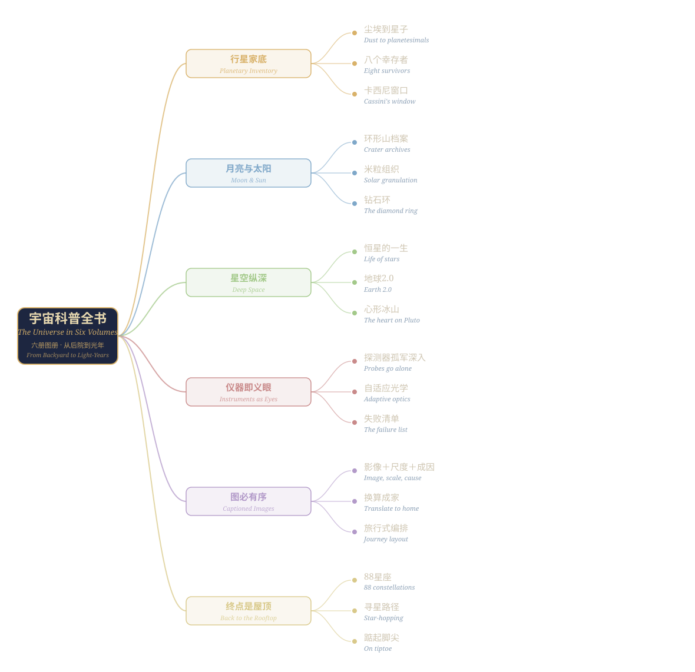

宇宙科普全书
〇 · 书籍信息
基本信息
| 书名 | 「宇宙科普全书」的底气写在副题里——「汇集了国内外顶级天文机构和学术资源」：六册即六个尺度，行星 → 月亮 → 太阳 → 星空 → 深空 → 星座，从脚下排到光年之外 |
|---|---|
| 六册阵容 | 《行星全书》（NASA 摄影档案 200 余张，卡西尼号土星分照片开卷）＋《月亮全书》《太阳全书》《太空全书》《太空全书2》《星座全书》——美国国家航空航天局（NASA）供图，科普作家尼尔马拉·纳塔瑞杰等执笔 |
| 开卷之图 | 第一张照片就有讲究——「土星春（秋）分：这张令人惊叹的图片是卡西尼号于 2009 年 8 月拍摄的」——图册的野心是让仪器替人去看：探测器、成像仪器就是人类的义眼 |
| 一句话 | 「有 NASA 在，你只需踮起脚尖，就会发现宇宙并非遥不可及」——六册把光年翻译成页码：远方不在远处，在翻页之间。 |
一 · 核心主题总览
这套图册里的四组母题：① 尘埃到行星
《行星全书》讲行星的起源：「在太阳形成之初，围绕太阳的一个盘面上散布着无数尘埃颗粒，行星就起源于这些微小的尘埃。微尘在碰撞中逐渐聚集成球体」——「一部分星子合并融合，当然也有一部分星子分解消散。在漫长的演变过程中，只有八个『幸存者』持续稳定地发展至今」——八大行星不是设计出来的，是碰撞的幸存者：行星史是一场四十亿年的淘汰赛。
② 仪器即义眼
《太阳全书》开篇即是「发现号航天飞机的宇航员在太空中拍摄的一张太阳照片」与「卡西尼号」「好奇号」的身影——「全世界的太空组织借助火箭、探测器、成像仪器探索太阳」——人类没有变大，是义眼越造越远：每一张高清影像背后，是一台仪器的孤军深入；2017 年 8 月 21 日田纳西州「钻石环」日食影像、「水星凌日」影像，皆是仪器时代的观测战利品。
③ 图像的证据链
图册的科学性藏在图注里：「米粒组织（solar granulation，是太阳光球层中气体的对流引起的一种日面结构）……每一个约有整个英国那么大。这种结构的形成与沸腾的原理类似」——图注不是装饰，是证据链：影像＋尺度＋成因三件套，一张照片变成一条知识点——科普图册的第一美德是「图必有序」。
④ 远方的可及性
整套书的情绪基调是「可及」：「有 NASA 在，你只需踮起脚尖，就会发现宇宙并非遥不可及，人类探索宇宙之梦并不遥远」——「只要人类想做，就没有去不到的远方」：从冥王星上「心形」冰山区域的发现，到「地球 2.0」的搜寻——远方被译成了页码，页码终将译成航程。
二 · 第一段 行星全书 —— 太阳系的家底—— 卡西尼 · 幸存者 · 八大行星 ——
从尘埃说起
行星起源一章把太阳系讲成一锅慢炖：「绕日轨道上的物质继续碰撞，其中一些凝聚成了较大的天体，还有一些碎裂成了较小的星际残骸」——「如今，除了八大行星——水星、金星、地球、火星、木星、土星、天王星、海王星外，太阳系大家庭中还包括很多其他类型的天体」——行星只是碰撞赛的赢家名单：矮行星、小行星带、彗星都是同一过程的落选者与遗物。
◆ 语言学习 · 概念 · 星子
| 原行星盘 | 太阳诞生时的尘埃盘：行星的原料库 |
|---|---|
| 星子 | 碰撞中聚成的中间体：一部分成行星，一部分碎掉 |
| 幸存者 | 八大行星：四十亿年淘汰赛的赢家 |
| 其他天体 | 矮行星与小行星带：同一过程的遗物 |
句型 ｜ 「只有八个『幸存者』持续稳定地发展至今。」——行星史的总写法：「幸存者」三个字把八大行星从名单变成故事—— stability 不是天赋，是熬出来的。
卡西尼的眼睛
开卷那张土星照片定了全册的调：「这张令人惊叹的图片是卡西尼号于 2009 年 8 月拍摄的。拍摄这张照片时，土星正值春（秋）分，太阳位于土星赤道的正上方」——分点时刻的土星光环恰好投下最长最清晰的影子，是一年一拍的窗口；图册的编排就是一次「跟着探测器旅行」：「你会遇到好奇号在火星工作……跟着这本书继续探索，你会发现自己一下子离太阳远了许多。你将看到巨大的气态行星。你会赞叹木星表面的风暴怎么会如此壮观」。
◆ 语言学习 · 概念 · 探测窗口
| 土星分点 | 2009 年 8 月：光环投影最清晰的拍摄窗口 |
|---|---|
| 卡西尼号 | 土星的常驻摄影师：1997—2017 |
| 好奇号 | 火星的地质学家：把行星变成现场 |
| 气态行星 | 木星土星：风暴比地球还大的世界 |
习语 ｜ 「翻动书页，开始你的行程。」——图册的邀请函：阅读被设计成航行——每页有所发现，书页即舷窗：科普书的最佳界面是「旅程」。
三 · 第二段 月亮与太阳 —— 离我们最近的两颗—— 阴晴圆缺 · 米粒组织 ——
月亮全书
离我们最近的天体反而最熟视无睹；《月亮全书》以 NASA 月面影像与观测史重讲这颗卫星：月相、环形山、月海、月球背面——「书末还附了延伸阅读书单，从 Ralph B. Baldwin 的《The Face of the Moon》(1949) 到 2016 年的月面摄影指南」——七十年的月亮研究被排成一张接力书单：人类对月亮的凝视从未中断，只是仪器越来越清楚。
◆ 语言学习 · 概念 · 月相
| 环形山 | 月面的伤疤：陨击四十亿年的档案 |
|---|---|
| 月海 | 暗色平原：古人想象的海洋 |
| 背面 | 永远背对地球：直到探测器绕过去 |
| 延伸书单 | 1949—2016：月亮研究的接力名册 |
句型 ｜ 「它只是提供了一些资源和资料，以帮助读者进一步学习和了解月球的相关知识。」——延伸阅读的谦辞：一本书承认自己是入口不是终点——好的科普都自带「下一站」。
太阳全书
《太阳全书》把太阳从「天上那个亮盘」还原成一台机器：光球、色球、日冕、黑子、耀斑、日珥——2017 年 8 月 21 日的日全食「钻石环」影像与 2016 年 5 月 9 日「水星凌日」影像并排出现；图注讲到米粒组织时顺手给出尺度：「每一个约有整个英国那么大。这种结构的形成与沸腾的原理类似，是对流运动的结果」——太阳表面是一锅沸腾的等离子海，每一粒「米」都有一个英国大。
◆ 语言学习 · 概念 · 米粒组织
| 光球层 | 我们看到的「太阳表面」：并非固态表面 |
|---|---|
| 米粒组织 | 对流气泡：每个约一个英国大 |
| 水星凌日 | 水星剪影过日面：仪器的精细观测 |
| 钻石环 | 日全食的瞬间景观：贝利珠与日冕同框 |
习语 ｜ 「每一个约有整个英国那么大。」——尺度翻译术：科普的功夫在换算——把「米粒」这个词配上一国之大的尺寸，惊叹就从名词变成了理解。
四 · 第三段 太空全书两册 —— 星空的纵深—— 银河 · 深空 · 地球2.0 ——
从银河到深空
两册《太空全书》把镜头从太阳系拉回整个银河与河外：恒星的一生、星系的结构、星云的色彩、暗物质与暗能量的谜题——「太空全书 2」续讲系外行星与深空探测：开普勒望远镜找到的「地球 2.0」、哈勃与深场照片——「从人类第一次登月、地球 2.0 的发现，再到发现冥王星上的『心形』冰山区域，NASA 承载着亿万人类探索宇宙的梦想」。
◆ 语言学习 · 概念 · 深空
| 恒星的一生 | 从星云到白矮星/中子星/黑洞的三种结局 |
|---|---|
| 星云 | 恒星的产房与坟场：影像最美的一章 |
| 地球2.0 | 系外宜居带行星的俗称：寻找另一个家园 |
| 心形冰山 | 冥王星的斯普特尼克平原：新视野号的发现 |
句型 ｜ 「经历过无数次失败后的打击和成功后的喜极而泣，仍然不惜一切代价，为人类的探索梦想投入最大的热情。」——NASA 小传的情绪句：航天史的一半是失败清单——影像越美，背后试错越多。
星座全书
收官一册回到最古老的仪器——肉眼：「星座全书」讲八十八星座的神话、连线与观测法：北天、南天、黄道逐季巡礼——它是六册中最「可操作」的一本：星图、亮度、寻星路径，读完当夜就能抬头验证——前五册替你望远，这一册教你站回地上：宇宙科普的闭环不在望远镜里，在自己的屋顶上。
◆ 语言学习 · 概念 · 八十八星座
| 88星座 | 国际天文学联合会划定的天空行政区划 |
|---|---|
| 黄道带 | 太阳周年视轨迹穿过的星座带 |
| 寻星路径 | 从亮星跳到暗星：肉眼导航术 |
| 闭环 | 读完抬头：科普的最终验证是夜空 |
习语 ｜ 「你只需踮起脚尖，就会发现宇宙并非遥不可及。」——整套书的结语精神：踮脚不是修辞，是姿态：把仰望变成习惯，远方才开始兑现。
五 · 人物图鉴与成长弧线—— 主角配角 · 一张表看穿 ——
主要人物
NASA——六册的幕后主角——「地球上最权威的航天局」：从登月到「地球 2.0」，影像档案是人类义眼的底片库
尼尔马拉·纳塔瑞杰——行星全书的执笔人——科普作家，「尤其擅长宇宙学、生态学和分子生物学题材」：让高清影像开口说话
卡西尼号——土星的常驻摄影师——2009 年土星分点照片开卷：探测器成为第一作者
好奇号——火星的地质学家——行星全书里的「在现场者」：把行星变成可以「到达」的地方
次要人物（功能位）
| 杰伊·帕萨乔夫 | 太阳全书作者之一——在大熊湖太阳天文台用自适应光学 1.6 米望远镜拍下水星凌日：仪器派的化身 |
|---|---|
| 比尔·奈 | 《比尔教科学》科学家——为行星全书作推荐：科普的接力棒在人与人之间传递 |
| 新视野号 | 冥王星的造访者——发现「心形」冰山区域：远程天体的第一次见面礼 |
| 开普勒望远镜 | 地球 2.0 的猎手——系外行星统计学的奠基者：宜居带从猜想变成目录 |
六 · 主题与象征—— 每个道具都在说话 ——
| 土星分点照片 ↔ 窗口 | 观测之学——一年一拍的窗口：好的影像是等出来的 |
|---|---|
| 米粒 ↔ 英国 | 尺度翻译——把米粒组织配上一国之大的尺寸：换算是科普的手艺 |
| 幸存者 ↔ 八大行星 | 淘汰赛史观——行星不是设计是熬出来的 |
| 踮起脚尖 ↔ 可及性 | 全书基调——远方被译成页码：仰望变成姿态 |
| 星图 ↔ 闭环 | 肉眼回归——最后一册教你抬头：科普的终点是自己的屋顶 |
七 · 写作手法赏析—— 怎么写，就能怎么学 ——
① 图先行
致读者先谢图片后谈文字——影像是证据，文字是解说员：图册的第一美德是「图必有序」
② 尺度翻译
米粒组织＝一个英国、光环影子＝分点窗口——把天文数字翻译成地理与生活参照
③ 旅程式编排
「翻动书页，开始你的行程」——按距离顺序排章：阅读动线＝航行航线
④ 机构背书
NASA 档案影像＋国际机构数据——「汇集国内外顶级天文机构和学术资源」：权威性来自信源，不来自形容词
⑤ 六册一尺
行星→月亮→太阳→深空→星座——尺度递进的目录学：一套书就是一次由近及远的旅行
八 · 名段欣赏—— 原文精读 · 逐段赏析 ——
九 · 金句摘录—— 14 条 · 中英对照 · 带出处 ——
"这张令人惊叹的图片是卡西尼号于 2009 年 8 月拍摄的。拍摄这张照片时，土星正值春（秋）分，太阳位于土星赤道的正上方。"—— 《行星全书》· 开卷图注
"在太阳形成之初，围绕太阳的一个盘面上散布着无数尘埃颗粒，行星就起源于这些微小的尘埃。"—— 《行星全书》· 行星的起源
"一部分星子合并融合，当然也有一部分星子分解消散。在漫长的演变过程中，只有八个「幸存者」持续稳定地发展至今。"—— 《行星全书》
"亲爱的太空探索者们，欢迎加入我们的太空之旅！"—— 《行星全书》· 致读者
"翻动书页，开始你的行程。每页你都会有所发现。"—— 《行星全书》· 致读者
"这本书会让我们想起两个问题，所有人在人生的某个阶段都曾追问过，全世界的太空组织借助火箭、探测器、成像仪器探索太阳。"—— 《行星全书》· 引言
"米粒组织……每一个约有整个英国那么大。这种结构的形成与沸腾的原理类似，是对流运动的结果。"—— 《太阳全书》· 图注
"从人类第一次登月、地球 2.0 的发现，再到发现冥王星上的「心形」冰山区域，NASA 承载着亿万人类探索宇宙的梦想与希望。"—— 作者简介 · NASA
"有 NASA 在，你只需踮起脚尖，就会发现宇宙并非遥不可及，人类探索宇宙之梦并不遥远。"—— 作者简介
"这份列表并没有包含本书中提到过的所有作品，也不打算作为一份供读者展开深入研究的详尽指南。它只是提供了一些资源和资料。"—— 《月亮全书》· 延伸阅读
"经历过无数次失败后的打击和成功后的喜极而泣，仍然不惜一切代价，为人类的探索梦想投入最大的热情。"—— 作者简介 · NASA
"跟着这本书继续探索，你会发现自己一下子离太阳远了许多。你将看到巨大的气态行星。"—— 《行星全书》· 引言
"2017 年 8 月 21 日，在田纳西州大烟山国家公园，观察到的日食形成的「钻石环」景象。"—— 《太阳全书》· 图注
"只要人类想做，就没有去不到的远方。"—— 丛书副题
十 · 拓展阅读—— 原文 · 词条 · 译文 ——
十一 · 个人感悟与心得—— 三点心得 ——
三点感悟
① 好影像是等出来的
土星分点照片的启示：仪器再贵，也贵不过耐心——七年等一个角度，是观测之学的底色：任何领域的高质量产出，背后都有一次甘愿的等待。
② 换算是科普的手艺
米粒＝一个英国：让人懂的方式不是给更多数据，是给一个能放进口袋的参照——写作、汇报、教学同理。
③ 读完抬头
星空闭环观：书把远方搬来，最终要把读者送回远方——任何知识的闭环都不在书本里，在合上书后的那个动作里。
六册翻完，最难忘的不是任何一颗星，而是那个动作的反复出现——卡西尼在土星轨道上等着分点，帕萨乔夫在山头等着凌日，无数探测器在黑夜里朝一个方向漂了几年、几十年——宇宙科普全书真正的主题不是宇宙，是「去」：只要人类想做，就没有去不到的远方。
十二 · 一页速查（复习用）
| 六册六尺度 | 行星→月亮→太阳→深空→星座：由近及远 |
|---|---|
| 幸存者 | 八大行星是碰撞赛的赢家名单 |
| 仪器即义眼 | 高清影像是探测器的孤军深入 |
| 图必有序 | 影像＋尺度＋成因：照片变知识 |
| 踮起脚尖 | 远方被译成页码：仰望成为姿态 |
十三 · 全书思维导图—— 一图纵览 ——

一图纵览全书骨架 · 中英双语对照 · 手机端可左右滑动查看全图